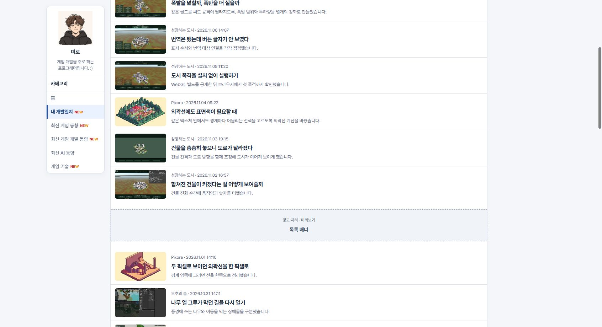
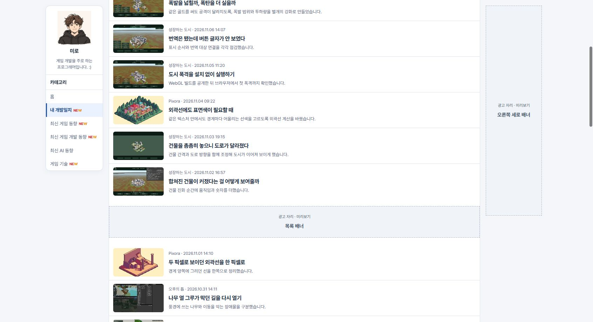

Tracefolio REPORTS & ISSUES
Tracefolio REPORTS & ISSUES문문동준 개발 블로그수정사항
게시판 우측 세로 광고 슬롯 추가
완료내 개발일지 등 게시판에서 기존 우측 세로 광고 미리보기를 쓸 수 있습니다.
작업 결과
공개 게시판에서 우측 고정 표시와 모바일 숨김을 확인했습니다.
변경 내용
적용 내용
build.mjs의 page()에서 홈과 게시물에 사용하던 우측 광고 미리보기 슬롯을 카테고리 게시판과 최신 뉴스 통합 목록에도 사용합니다. 배치 설정, 미리보기 전환, 넓은 화면에서의 고정 표시 방식은 기존 슬롯을 따릅니다.
const isBoard=canonical==='/news/'||sections.some(section=>sectionPath(section.id)===canonical);
const rightAd=(canonical==='/'||isBoard||canonical.startsWith('/posts/'))?adMock('오른쪽 세로 배너','rail'):'';
대화 기록
- 사용자 — “이런 게시판에서도 우측 광고 나오게해”
- AI — 기존 우측 미리보기 슬롯을 게시판 경로에도 연결했습니다.
검증
커밋 afbfb4b를 푸시했습니다. 공개 최신 뉴스 통합과 카테고리 게시판 6곳의 슬롯을 확인했습니다. 1692px 공개 내 개발일지에서 미리보기를 켜고 스크롤했을 때 우측 슬롯은 160×600px, 상단 16px 고정, 본문과 간격 16px였습니다. 390px에서는 숨겨졌습니다. 검증은 광고 배치 미리보기로 수행했습니다.


남은 사항
전역·프로젝트 지침 변경은 없습니다.
작업 시간
- 제안 시간: 약 1분 안에 수정 후 공개 검증
- 실제로 완료된 시간: 블로그 공개 확인까지 약 1분 53초. 2026-11-10 18:30:33 KST
- XERJ: 미사용 — 코드 검색 근거가 제공되지 않았습니다.